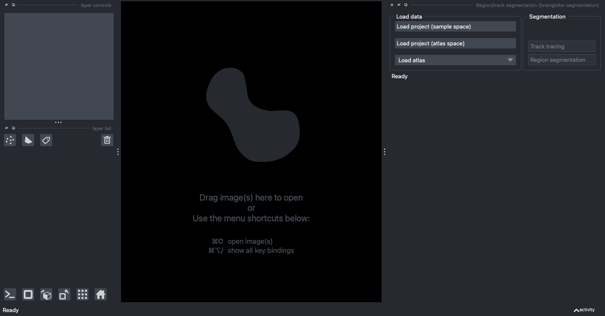
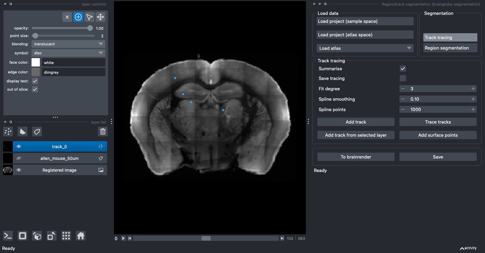
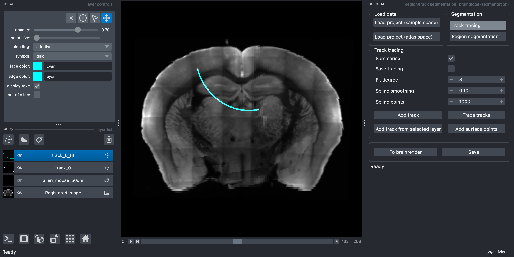

Segmenting a 1D track#
In this tutorial, you will use the brainglobe-segmentation plugin for napari to segment a 1D track, such as a fibre track, or a silicon probe track. As a prerequisite, you will need to have registered your data to an atlas using brainreg and know what folder you saved this in (your “brainreg output directory”). If you don’t have this, please follow our registration tutorial first.
The focus of this tutorial is simply to successfully register a single, straight 1D track. For more information about how to process silicon probe tracks, please see Silicon probe tracking.
Note
You will need napari installed on your computer - please follow napari’s installation instructions to do so (including their recommendation to use a conda environment).
Open
napari.Install
brainglobe-segmentationby selectingPlugins > Install/Uninstall pluginsand searching forbrainglobe-segmentationin the searchbox. If it is not installed yet, click on theInstallbutton.
Caution
On Silicon Macs you may have to run conda install hdf5 on the command line (in your conda environment) first for the installation to be successful.
Open the
brainglobe-segmentationwidget by selectingPlugins > Region/track segmentation (brainglobe-segmentation)in the napari menu bar near the top left of the window. 
The brainglobe segmentation widget appears on the right-hand side of the window.
Load your registered data in atlas space by clicking on
Load project (atlas space)and navigating to yourbrainregoutput directory.If required, adjust the contrast on the registered image by selecting the
Registered Imagelayer on the left of the screen, and clicking onAutocontrast: onceon the top left of the screen.Select the
Track tracingbutton in theSegmentationpanel.Click the
Add trackbutton.
 A new Points layer named
A new Points layer named track_0 appears on the left hand side.
If required, rename the track (by selecting the
track_0text).Navigate in the image to where you want to draw your track.
Make sure the add points mode is activated (by selecting the
+symbol on the top left - find out more about how to add/delete/select points in napari).Trace your track by clicking along it. You can add as many, or as few, points as you like, and this can be done in 3D by changing the viewer plane as you go along.

Points appear where you’ve clicked in the image
Caution
Make sure you select the points in the order you wish them to be joined.
(Optional) If you want to add an additional first point exactly at the surface of the brain, click
Add surface points. Selecting this option will add an additional point at the closest part of the brain surface (based on the registration) to the first point, so that the track starts there.Join the points using spline interpolation by clicking
Trace tracks. You can change:
Summarise- Defaults to on, this will save a csv file, showing the brain area for each part of the interpolated track (determined bySpline points)Save tracing- Defaults to off. This will save your segmentation layer at the same time as running the analysis (this may make your analysis take longer)Fit degree- What order spline fit to use (the default is 3, cubic)Spline smoothing- How closely or not to fit the points (lower numbers fit more closely, for a less smooth interpolation)Spline points- This doesn’t affect the interpolation, but determines how many points are sampled from the interpolation (used for the summary)Add surface points- Selecting this option will add an additional point at the closest part of the brain surface to the first point, so that the track starts there.

A new Points layer containing the fitted points named track_0_fit appears on the left hand side and in the napari window, and a .csv file will be saved, showing the brain region for every spline point along the track along with the distance from the start of the track.
Note
All data will be saved into your brainreg output directory at /segmentation/atlas_space/tracks subfolder if you loaded the data from atlas space, otherwise, it will be in the sample_space subfolder.
(Optional) Use the
Savebutton to save your points as.pointsto be reloaded at a later date. Use theTo Brainrenderbutton to save the fitted spline as.npyfor brainrender visualisation.
Note
Three files will be saved for each 1D track:
TRACK_NAME.csv- a csv file summarising the depth, atlas region name, and atlas region ID (based on your chosen atlas) for each point of the fitted spline.TRACK_NAME.npy- a numpy array containing the coordinates for each point of the fitted spline. This array can be visualised in 3D with brainrender.TRACK_NAME.points- a pandas HDF5 dataframe containing the coordinates for each point used to create the track (e.g., from manual annotation).
Hint
For more information about how to use automated methods to segment your feature of interest, please see Analysing segmentation from other napari plugins. For full information on how to use brainglobe-segmentation, please see the brainglobe-segmentation page